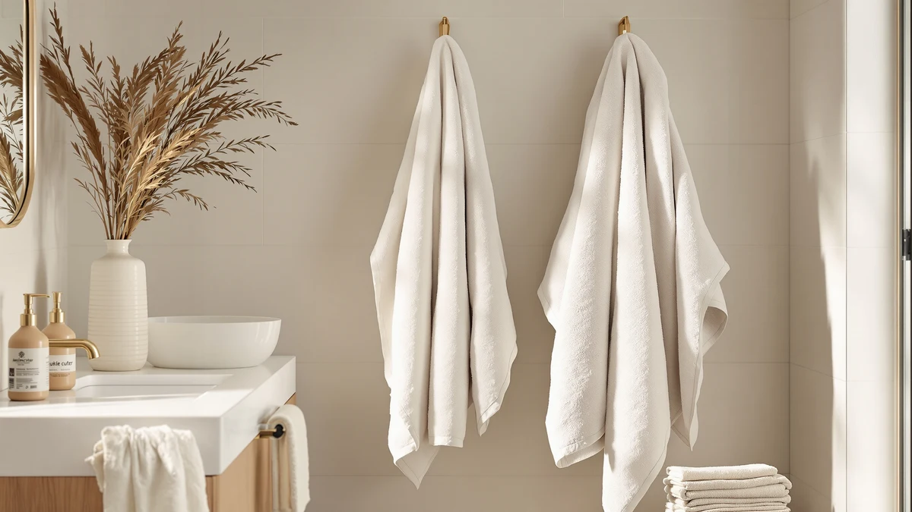

Best How to Install Bathroom Towel Ring (2026) | Best Bath Towels
Prices and picks verified as of September 2026. Independent, reader-supported reviews.


Things to Know Before You Buy
- Height matters most. Mount a towel ring 50 to 52 inches from the floor to its center, or about 20 inches above a vanity counter, so a folded hand towel clears the backsplash.
- You rarely hit a stud, and that is fine. A towel ring carries a damp hand towel, not a person. Self-drilling metal anchors rated for 40 pounds or more handle the load with room to spare.
- Skip the plastic anchors in the box. The ribbed plastic plugs bundled with most rings loosen in drywall within months. A $5 pack of zinc self-drilling anchors outlasts them by years.
- Tile changes the drilling, not the layout. Installing a bathroom towel ring on tile calls for a carbide bit, painter's tape over the mark, and slow drill speed with hammer mode off.
- Budget 30 minutes and about $15. That covers anchors and a drill bit if you already own the drill and level.
Once you know how to install bathroom towel ring hardware, the job takes about 30 minutes from the first pencil mark to the final set screw. You need a drill, a torpedo level, and a pair of drywall anchors that cost less than lunch. The ring itself usually ships with everything else: mounting screws, a concealed bracket, and a small Allen key for the locking screw underneath.
The part that separates a solid install from a wobbly one happens before you pick up the drill. Height, distance from the sink, and the quality of your anchors decide whether the ring stays tight for years or starts spinning after a month of wet hand towels. Get those three choices right and the drilling itself takes ten minutes.
What You'll Need
- Supplies: two self-drilling zinc drywall anchors, painter's tape, a pencil, plus the screws and set screw packed with your towel ring
- Tools: a power drill with a 3/16-inch bit, a torpedo level, and the small Allen key most manufacturers include in the box
Step 1: Pick the spot and mark the height
Stand at the sink and reach to the side without leaning. That arc, usually 18 to 24 inches from the edge of the basin, is where a towel ring earns its keep. Any farther and you drip across the counter every time you wash your hands.
Mark the center point 50 to 52 inches from the finished floor. Over a vanity, measure about 20 inches up from the countertop instead, and confirm a folded hand towel will hang clear of the backsplash and any outlet. Hold the ring against the wall at your mark and step back for a look before committing. A strip of painter's tape at the mark protects the paint and gives the pencil a surface to grip.
Step 2: Check for studs, pipes, and wiring
Run a stud finder over the marked area. Landing on a stud is a bonus, since a wood screw into framing beats any anchor, but the edge of a stud is the worst outcome. A screw that catches half wood and half drywall never seats tight. Slide the mark a half inch either way so it sits fully on the stud or fully off it.
Think about what runs inside the wall too. Supply lines climb vertically below the faucet, and electrical cable runs vertically above switches and outlets. Keep your towel ring a few inches horizontally clear of both paths. A 3/16-inch hole in drywall rarely reaches a pipe, but the habit costs nothing and skips the one afternoon that ruins the whole project.
Step 3: Drill the pilot holes and set the anchors
Hold the mounting bracket against the wall, center it on your mark, and rest the torpedo level on top. When the bubble settles in the middle, trace the screw holes with the pencil. Most towel ring brackets stack two holes vertically, which makes level less forgiving than it sounds: a bracket tilted two degrees reads as crooked from across the room once the ring hangs on it.
In bare drywall, self-drilling zinc anchors cut their own path, so a shallow starter dimple from the drill is all they need. Drive each one in with a Phillips screwdriver until the flange sits flush with the wall. On tile, cover the marks with tape, start a carbide bit at low speed so it cannot skate across the glaze, keep hammer mode off, and push plastic tile anchors into the finished holes by hand.
Step 4: Screw the mounting bracket to the wall
Line the bracket holes up with the anchors and start both screws by hand. Two or three threads each is enough to hold the bracket while you square it up, and hand-starting tells you immediately whether an anchor is gripping or spinning in its hole.
Rest the level on the bracket one last time, then drive the screws home with the drill on its lowest clutch setting, or finish with a screwdriver for more feel. Snug is the target. Overtightening cracks tile and strips drywall anchors, and either failure means restarting the towel ring installation a half inch away from a ruined hole.
Step 5: Attach the ring and tighten the set screw
Slide the towel ring's mounting post over the bracket. It should seat flush against the wall with no gap at the base. Find the small hole on the underside of the post, insert the Allen key, and tighten the set screw until the ring stops rotating.
Test it the way it will get used. Hang a damp hand towel, pull it off with one hand a few times, and press lightly on the ring. Nothing should shift. A rotating post means the set screw needs another quarter turn. A moving bracket means an anchor has let go, so take the ring off and fix it now, before daily use works it looser.
Common Mistakes to Avoid
Mounting too high tops the list. A ring at eye level looks tidy on an empty wall, then leaves you tugging a towel down awkwardly a dozen times a day. Stick to 50 to 52 inches from the floor even if the wall looks bare above it. Art can fill empty space; a misplaced ring cannot move without leaving holes behind.
The second mistake is trusting the anchors in the box. Manufacturers pack the cheapest ones that survive shipping, and ribbed plastic plugs loosen in drywall under the daily tug of wet towels. Five dollars of zinc self-drilling anchors makes the problem disappear for the life of the fixture.
Skipping the level feels harmless with a fixture this small, but the ring hangs from a single post, so any tilt in the bracket shows up doubled at the ring below it. Thirty seconds with a torpedo level spares you from staring at a crooked circle every morning.
On tile, two errors do most of the damage when you install a bathroom towel ring: drilling with hammer mode on, which chips the glaze, and overtightening the bracket screws, which cracks the tile itself. Keep the drill speed low and stop tightening the moment the screws feel snug, and the tile stays intact.
Our Top Picks
A freshly installed towel ring deserves towels that hang well and dry fast between uses. These three picks from our research cover the everyday set, the family set, and the after-shower layer.

Editor's Pick
Jacquotha 2-Pieces Luxury Bath Towels
Dense, tightly woven cotton that drapes cleanly on a ring and keeps its softness through repeated hot washes.
$36.09
Check Price on Amazon
Best Value
Jacquotha Pink Bath Towels Set
The same soft Jacquotha cotton in a family-sized set, priced below most single luxury towels.
$33.43
Check Price on Amazon
Premium Choice
Soft Robe For Women，Warm Plush
A warm plush layer for the minutes after you hang the towel back up; sizing runs generous, so check the chart before ordering.
$19.99
Check Price on AmazonFrequently Asked Questions
How high should a bathroom towel ring be mounted?
Mount the ring 50 to 52 inches from the finished floor to the center of the ring. Above a vanity, measure about 20 inches up from the countertop and confirm a folded hand towel clears the backsplash. Drop to around 40 inches in a kids bathroom.
Do I need to hit a stud to install a towel ring?
No. A towel ring holds a damp hand towel, a load of a pound or two. Self-drilling zinc anchors rated for 40 pounds or more grip drywall firmly enough to outlast the fixture. If a stud happens to sit at your mark, use a wood screw straight into the framing and skip the anchors.
Can I install a towel ring on ceramic tile?
Yes. Cover the marks with painter's tape, drill with a carbide or diamond bit at low speed, and keep hammer mode off. Push plastic tile anchors into the holes, then drive the screws snug rather than tight, since overtightening cracks tile.
Should I put a towel ring or a towel bar next to the sink?
A ring suits the sink zone: it holds one hand towel in a small footprint within arm's reach. Bars belong near the shower for full-size bath towels, which dry faster spread flat than folded through a ring. Most bathrooms benefit from one of each.
My towel ring keeps coming loose. How do I fix it?
Tighten the set screw on the underside of the post with the included Allen key first, since it backs out under daily use. If the whole bracket wiggles, remove the ring and inspect the anchors. A spinning anchor has torn its grip; replace it with a larger self-drilling anchor or shift the bracket a half inch to fresh drywall.
Verdict
Knowing how to install bathroom towel ring hardware comes down to three decisions made before the drill comes out: a height of 50 to 52 inches, a spot within arm's reach of the sink, and metal anchors instead of the plastic plugs in the box. None of the five steps demands real skill, just care. Mark the spot, check the wall, set the anchors, level the bracket, and tighten the set screw. Thirty minutes covers the labor, and around $15 in anchors and a drill bit covers the parts your ring does not include. The payoff shows up daily. A ring at the right height holds tight through years of wet towels and hangs straight enough that you stop noticing it, which is the whole point of good hardware. Once yours is up, give it a towel worth reaching for. The Jacquotha luxury set earned our top spot for its dense weave and clean drape through a ring, and it turns the new fixture into the most used ten square inches of your bathroom wall.